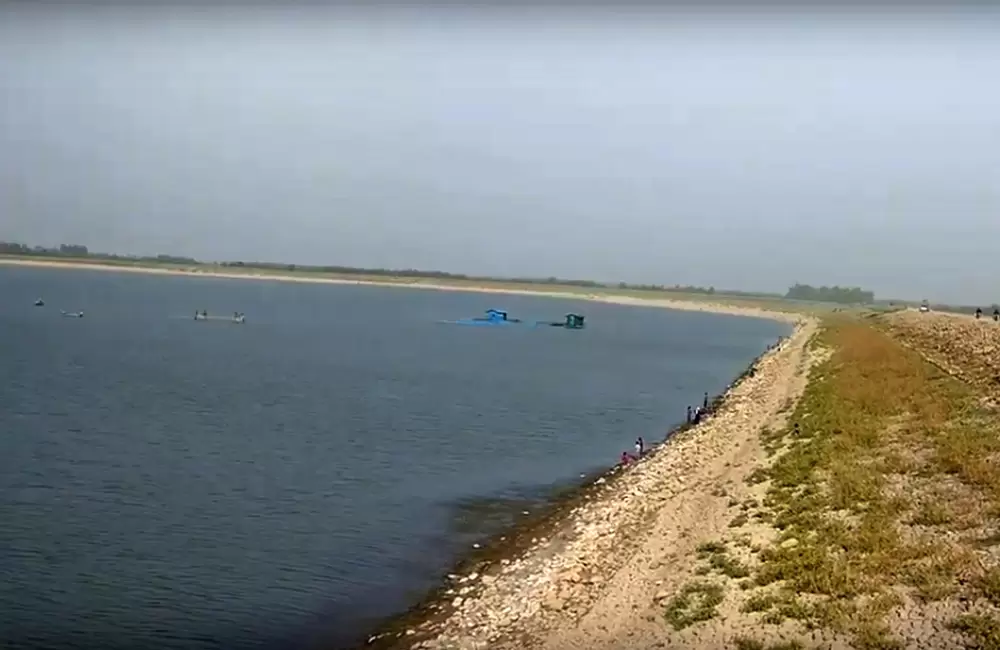
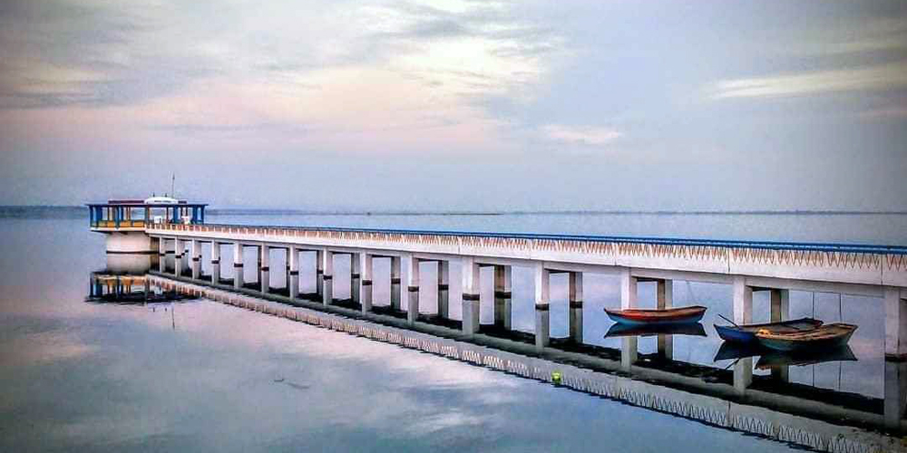
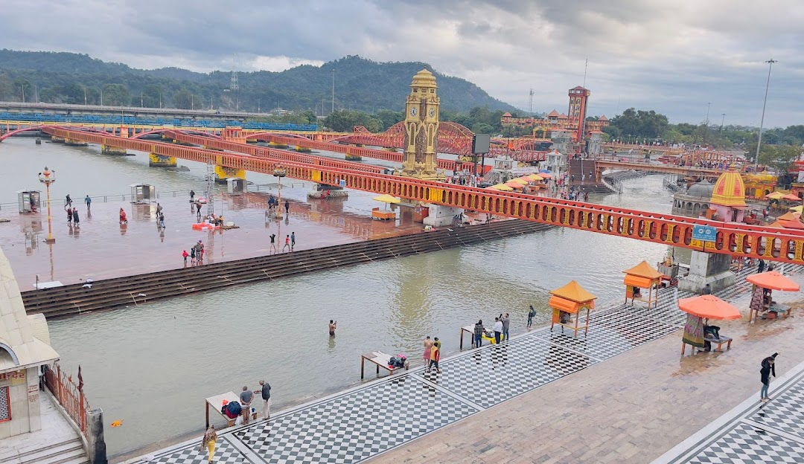

Udham Singh Nagar
Uttarakhand,india
Udham Singh Nagar is a district of Uttarakhand state in northern India. Rudrapur is the district headquarter. The district consists of nine Tehsils named Bajpur, Gadarpur, Jaspur, Kashipur, Khatima, Kichha, Nanakmatta, Rudrapur, Sitarganj. The district is located in the Terai region, and is part of Kumaon Division. It is bounded on the north by Nainital District, on the northeast by Champawat District, on the east by Nepal, and on the south and west by Bareilly, Rampur, Moradabad, Pilibhit and Bijnor District of Uttar Pradesh state. The district was created on 29 September 1995, by Mayawati government out of Nainital District. It is named for freedom fighter and Indian revolutionary Udham Singh.
Gularbhoj Dam

The dam is surrounded by dense forests and there is a wide variety of animals that can be seen here. Gularbhoj dam consists of three Jalashay (reservoirs) namely Baur Jalashay, Haripura Jalashay, and Nanak Matta Jalashay. All the jalashay have their own specialties and offer incredible views to the visitors. It is also known as Haripur Dam as well.
The construction of Gularbhoj Dam had begun in the year 1966 on Bhakra River and was completed in the year 1975. The total area of the dam is more than 30 km and covers forests and villages.
Haripura Jalashay is filled with beautiful scenery and is ideal for fishing and angling. You can find a variety of fishes like Rohu, Catla, and even crabs here.
Baur Jalashay is the most scenic of all the jalashays and is ideal for people visiting the Gularbhoj Dam for recreation. There is a beautiful park to roam around and good restaurants which serve delicious foods.
Nanakmatta

Nanakmatta is a historical town named after the Sikh pilgrimage site, Gurdwara Nanakmatta Sahib, in the state of Uttarakhand, India. Sikh tradition records that the site was once called Gorakhmata, a centre of Siddh-jogis named after the founder of their order, Gorakhnath, at the distance of 30 miles from Reetha sahib. In the Siddh-Gost in Guru Granth Sahib, the story of Guru Nanak ji on his first udasi is told, wherein he had a long discourse with siddhas on matters of religion and metaphysics. Tradition says that the place was renamed Nanakmatta to perpetuate the memory of Guru's visit. The town is associated with Guru Nanak Dev and Guru Hargobind.
It is situated on the bank of Deoha stream, which has since been dammed into a reservoir named Nanak Sagar. The Gurudwara is located 15 kilometres west of Khatima Railway Station on road to Tanakpur. The holy shrine is near the town of Sitarganj. It is one of three Sikh Holy places in the state, with others being Gurdwara Hemkunt Sahib and Gurudwara Reetha Sahib.
Haridwar

Haridwar is a city and municipal corporation in the Haridwar district of Uttarakhand, India. With a population of 228,832 in 2011, it is the second-largest city in the state and the largest in the district. The city is situated on the right bank of the Ganges river, at the foothills of the Shivalik ranges. Haridwar lies in doab region where people speak khari boli. Haridwar is regarded as a holy place for Hindus, hosting important religious events and serving as a gateway to several prominent places of worship. Most significant of the events is the Kumbha Mela, which is celebrated every 12 years in Haridwar. During the Haridwar Kumbh Mela, millions of pilgrims, devotees, and tourists congregate in Haridwar to perform ritualistic bathing on the banks of the Ganges to wash away their sins to attain moksha.
Haridwar presents a kaleidoscope of Indian culture and development. In sacred writings, it has been differently specified as Kapilsthan, Gangadwar and Mayapuri. It is additionally a passage for the Chota Char Dham
Next time you're in my Town, give me a ring 📱 for a tour around the city!
This project is done by Ashish Setiya